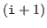

Next: Using from Fortran on Up: Sample programs Previous: Sample programs
/* sample program for CP-ACE function implemented on MPI */
#include "cp_mpi.h"
#include <stdio.h>
int main(int argc, char **argv){
double sendbuf[3]; /* send buffer */
double recvbuf[3]; /* receive buffer */
long sendsizes[2]; /* sizes of data sent to other processes */
int dests[2]; /* ranks of destination processes */
int destcount; /* number of destination processes */
long recvsize; /* total size of receive data */
int rank;
int i;
MPI_Init(&argc, &argv);
MPI_Comm_rank(MPI_COMM_WORLD, &rank);
/* data and destination processes */
if(rank == 0){
/* rank 0 sends 1.0 and 2.0 to rank 1 and sends 3.0 to rank 2 */
sendbuf[0] = 1.0;
sendbuf[1] = 2.0;
sendbuf[2] = 3.0;
sendsizes[0] = 2 * sizeof(double);
sendsizes[1] = 1 * sizeof(double);
dests[0] = 1;
dests[1] = 2;
destcount = 2;
}else if(rank == 1){
/* rank 1 sends 4.0 to rank 0 */
sendbuf[0] = 4.0;
sendsizes[0] = 1 * sizeof(double);
dests[0] = 0;
destcount = 1;
}else{
/* rank 2 sends no data */
destcount = 0;
}
/* exchange data */
recvsize = cp_mpi_export(sendbuf, sendsizes, dests, destcount,
recvbuf, sizeof recvbuf, MPI_COMM_WORLD);
/* print receive data */
for(i = 0; i < recvsize / sizeof(double); i ++){
printf("rank %d received %f\n", rank, recvbuf[i]);
}
MPI_Finalize();
return 0;
}
#include "cp_mpi.h" includes the declaration of the CP-ACE function.
MPI_Init must be called before calling the CP-ACE function.
cp_mpi_export sends data to some processes and receives data which other processes have sent by cp_mpi_export (Figure 1). The first argument sendbuf specifies an array of the send buffer. The head of sendbuf is sent to the first destination process, following data are sent to the second destination process, following data are sent to the third destination process and so on. The second argument sendsizes is an array that contains sizes of data sent to destination processes. sendsizes[i] specifies the size of data sent to the -th destination process in bytes. Unlike MPI, the data size is not specified of the number of elements nor the data type is. Note that data sizes are long. The third argument dests is an array that contains ranks of destination processes. dests[i] specifies the rank of the -th destination process. The fourth argument destcount is the number of destination processes. The fifth argument recvbuf is an array of the receive buffer. If a process receives from multiple processes, the order of data received from one process and data received from another process is undefined. The sixth argument sizeof recvbuf is the size of recvbuf in bytes. The last argument is the communicator. cp_mpi_export returns the size of total receive data in bytes.
To compile this program, type
mpicc mpi_export.c -lcp_mpi
mpicc is the command for compiling MPI programs written in C language. On some systems, the command name may differ.
You can execute this program like
mpiexec -n 3 ./a.out
This program prints
rank 0 received 4.000000 rank 1 received 1.000000 rank 1 received 2.000000 rank 2 received 3.000000